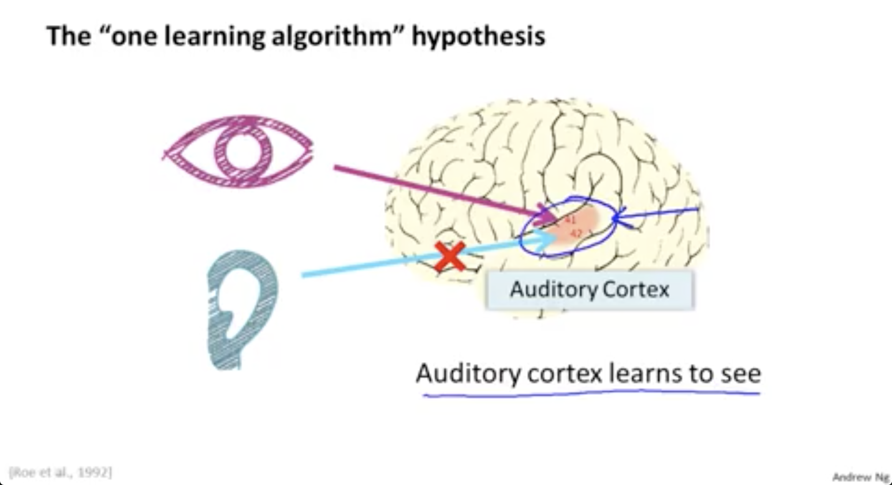

Neuroscientists have done the following fascinating experiments where you cut the wire from the ears to the auditory cortex and you re-wire, in this case an animal's brain, so that the signal from the eyes to the optic nerve eventually gets routed to the auditory cortex. If you do this it turns out, the auditory cortex will learn to see. And this is in every single sense of the word see as we know it. So, if you do this to the animals, the animals can perform visual discrimination task and as they can look at images and make appropriate decisions based on the images and they're doing it with that piece of brain tissue.
